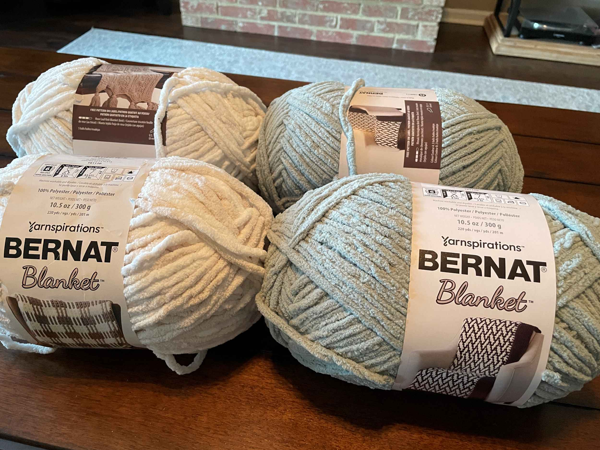

Speedy Granny Stripe Blanket
I really like the way the Bernat Blanket Yarn makes this blanket work up so quickly. Using a bulky yarn is great for last minute crochet gifts. I also like to use a border on my blankets as this helps even out the ends and keeps me from having to weave in ends from multiple yarn color changes.
Skill Level:Level 2: Easy
Materials:
- 2 Balls of Bernat Blanket Yarn Super Bulky (Size 6) 100% Polyester (220 Yards) in the color Beach Foam (Color A)
- 2 Balls of Bernat Blanket Yarn Super Bulky (Size 6) 100% Polyester (220 Yards) in the color Misty Green (Color B)
- Size N 10.00 mm crochet hook
60 inches Wide and 43 inches Long
I like to crochet a blanket that's wide enough to cover two laps or at least a human lap with a cat
Abbreviations:- CH = Chain
- SC = Single Crochet
- DC = Double Crochet
- This blanket can be made to any width you would like. The starting chain has to be a multiple of 3 plus an extra 2 stitches. For example, this pattern's starting chain is 83 chain stitches which is 27 stitches multiplied by 3 (27*3 = 81) plus 2 stitches (81+2=83).
- Every crocheter likes to change to a new yarn color in slightly different ways. Personally, I like to avoid weaving in as many
ends as I can at the end of a crochet project. Since this blanket has a border, I like to carry my yarn up the side of the blanket when I change colors
instead of cutting the yarn and fastening off. If you would prefer to cut, fasten off, and weave in your ends, do this at the end of Step 4 and then after you
complete Step 6 each time. If you would instead like to avoid weaving in ends, carry your yarn up the side of the blanket as seen below.
- Color B will be the Border color, so make sure you choose whichever color you want for your border as Color B.
Pattern Instructions
Main Blanket
- Chain 83 stitches in Color A using your 10.00 mm crochet hook. Crochet someonwhat loosely as you want your chains to reach a length of about 59 inches.
- Start in the second chain from the hook. Work one Single Crochet (SC) in each stitch to the
end (81
Stitches)
- Chain 3 (counts as Double Crochet(DC)). Turn your work. Work 1 Double Crochet in the base of
the Chain 3 you just made.

Skip 2 Single Crochet stitches and work 3 DC in the third stitch.
*Skip 2 stitches. Work 3 DC in the third stitch.* Repeat between ** until there are 3 stitches left in the row.DO NOT FASTEN OFF.Skip 2 stitches. Work 2 DCs in the last stitch.
Turn. - Chain 3 (counts as DC). Work your stitches for this upcoming row in the space between the
double
crochet clusters. Work 3 DCs in the first space.
*Work 3 DC into the next space.* Repeat between the **, working a cluster of 3 DCs into each space. At the end of the row, work one DC into the top of the Chain 3 stitch of the previous row (1 DC, 27 Clusters of 3 DCs, 1 DC)
Change to Color B. See the Notes section above about carrying Color A up the side of your work. - Chain 3 in the new color and work a DC into the first space.
Work 3 DCs in Color B into the next space between groups of 3 DC in Color A in the row below.
*Work 3 DCs in Color B in the next space.* Repeat between the ** until one space remains at the end of your row. Work 2 DCs in the last space.
Turn. - Chain 3 (counts as DC). Work 3 DC into the first space.
*Work 3 DC in the next space.* Repeat between the ** until the end of the row. Work 1 DC into the top of the Chain 3 stitch of the lower row.
The Rows you have just completed in steps 5 and 6 form the pattern repeat. Continue completing steps 5 and 6 alternating between Color A and Color B until the blanket reaches the length you like or you run out of Color A. Fasten off.
Border
- Draw up a loop in Color B in a corner of your blanket. Slip stich to secure the loop. Single
Crochet
down the side of the blanket making sure to work your SC stitches evenly.
When you get to a blanket corner make 3 SC stitches into the corner stitch so that you have a rounded corner.
Once you have made it back the beginning slip Stich into your first SC. - *SC, Chain 2, SC in the same stitch. Skip a stitch.*
Repeat between the ** around the border of the blanket.